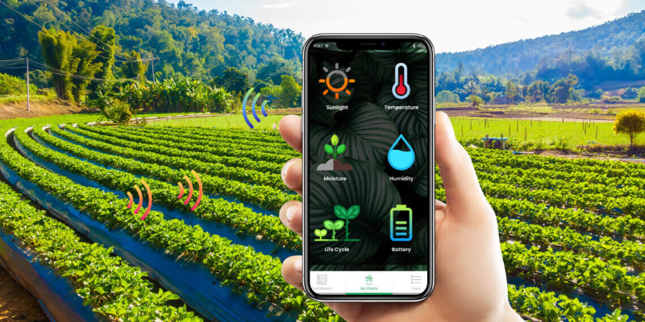

Sharing Nature's Gifts
We Promote Agro-businesses between Rural and Urban Businesses using Technology
Livelihood Development Institute (LIDI) is a web-based agro-business marketplace that is helping rural
farmers to sell their produce to urban and international buyers, who sell and process agro-food.
It is the only agro-technological website that helps to promte agriculture activities in Liberia.
The website is used by farmers and agro-busiesses to connect to transactions.
Through LIDI, farmers are earning high profits and local agro industry is adding value to agrocultural produce. Thus, the country
is earning foregn currencies to improve the economy. LIDI value the environment, as a result it promotes sustainable agriculture.

Urban Buyer
Rural Farmers, through LIDI connection bring their products to the market. Urban buyers and supermarkets can buy from the buyers directly or on the webbased plateform.

Agro-techn
The web-based platform of LIDI can help inform farmers about their produce readiness
and can connect rural farmers to urban and international buyers